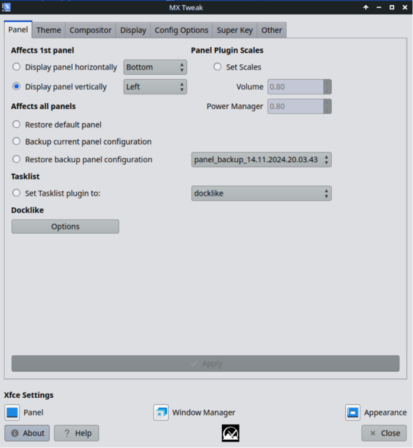

MX Tweak brings together a number of small but often used customizations. Related settings applications native to Xfce are presented below for the user’s convenience.
Allows the user to make quick user interface changes to system defaults.
The user may select to display the default panel horizontally (top or bottom) or vertically (left–default–or right). Customizations, including panel plugins,will be preserved, although plugin location might be altered.
A backup of the current panel is stored in ~/.restore/. A backup is created on first launch of the app, and a new backup may be made at anytime. Multiple backups are supported.
Tasklist refers to the area of the panel that contains icons with running applications. By default MX uses the docklike plugin, but the option to use the classic "window buttons" tasklist is available.The user may use the “Restore default panel” to get back to the original, as-shipped panel.
The theme tab offers a quick way to set various theming choices. The options presented depend on desktop in use, but they should be relatively self-explanatory.
Xfce & Fluxbox users user may select Gtk theme, window manager theme, icon theme and cursor theme on this tab. Xfce users can also use pre-configured theme sets from the drop down combo box.
Xfce users can also save their current gtk, window manager, and icon theme settings to a new theme set. The theme-set will be saved in ~/.local/share/mx-tweak-data.
Fluxbox users get a link to the provided mxfb-look tool that can store theme combination sets.
KDE/plasma users can set global theme, plasma widget theme, and color scheme.
All supported MX desktops can select icon themes and mouse cursor themes.
Here the user may select whether to use a compositing window manager, and which compositor to use.
Xfwm is the default window manager for Xfce, and it includes its own compositor. That compositor is turned off by default in MX Linux because it can cause various problems on older machines. When you turn on its compositor by selecting it from the pull-down menu, the button “Xfwm Settings” becomes active and, when clicked, provides access to some basic settings. For details, consult the Xfce Wiki.
Under Xfce 4.14 and up, the user can set the “Vblank” mode to auto, glx, xpresent, or off.
glx - Anecdotally, this seems to work well with intel cards and some nvidia/ati cards
xpresent - uses the xpresent libraries. Anecdotally, this seems to work well with newer ati/amd cards.
off - this disables the vblank code. Anecdotally, this seems to work well with nvidia cards.
Compton is often used instead of Xfwm to reduce the kind of screen tearing that sometimes troubles lightweight compositors such as Xfwm. MX Tweak gives you an easy way to start, stop, and configure the Compton compositor.
At launch, a compton.conf configuration file will be created for you in ~/.config if one doesn’t already exist.
The “Stop Compton” button will change to “Launch Compton” if its not running.
The “Configure Compton” button will launch compton-conf, an LXqt project configuraiton tool for compton. The compton-conf configuration tool works best with the compton.conf file included with the package. Changes made by compton-conf will take affect at the “apply” button.
If you have an existing compton.conf file, or want to change settings not available in the gui, the “Edit compton.conf” button will open ~/.compton.conf in a text editor for you to edit directly. Use the Start-Stop button to cycle compton for manual changes to take affect.
The “launch at login” checkmark will enable autostart of compton. this works if the compton file is the in the default location of ~/.config/compton.conf.
Config options contains a few special items pertaining to the Xfce system configuration. Most items are self-explanatory.
Occasionally the thunar custom right-click actions maybe be updated. While these updated configurations will be present on the system, they will not go into effect automatically for upgraders. The “Reset” actions will change any thunar custom actions to the latest MX defaults.
This tab is only visible when the user is running MX-Fluxbox.
A more detailed description of these and other Fluxbox settings is provided by the FAQ document (F1 or Menu > Help).

This tab is only visible when the user is running KDE/Plasma.
Most items are self-explanatory. Due to plasma's complexity, users are encouraged to use the KDE plasma System Settings tools to do plasma configuration.
On MX19 and later, a Display tab is available for Xfce users. Here you can control the backlight, xrandr brightness, resolution, gtk scaling and the hidden xrandr scaling available under Xfce
Configuration options on this tab require admin privledges before they go into effect. The user will be prompted for the current admin password on apply.
The graphics driver entries vary depending on what video adapter is installed on the system. If a intel graphics board is detected, the user will be presented with the option show above, which will force the system to use the “intel” driver rather than the debian default “modesetting” driver. The “intel” configuration also includes a “tear free” option that many find helps with screen tearing.
If the user has an amd graphics part, then the user will be offered a choice to enable the “tear free” option for the radeon or amdgpu drivers, which ever is in current use. The actual driver choice will not be changed, just the “tear free” option.
Xfce users running the default xfce-superkey utility will be able to customize what their super key does here.
Development history: Dolphin_Oracle, including a wrapper for Compton-conf (LXqt)
License: here.